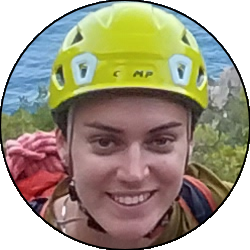

Relazione
| Data Uscita | 25-09-2023, Lunedì | Area | Sardegna |
|---|---|---|---|
| Luogo di Partenza | Parcheggio di Pedra Longa - Baunei (NU) | Quota |
40m la partenza 128m la cima |
| Dislivello | 88m | Tempi | 01:00 ore (00:30 ore la via) |
| Esposizione | Ovest, Nord | Difficoltà Tecnica | II |
| Punti di Appoggio | Nessuno, baretto al parcheggio | Acqua | No |
| Partecipanti |
 Erika,
Mike,
 Oracolo, Oracolo,
 Silvia Silvia
|
||
(clicca sull'immagine per scarica la traccia GPS)
Accesso
Da Baunei dirigersi verso Tortolì, e poco dopo essere usciti dal paese individuare un bivio poco visibile verso sinistra (cartelli), che si imbocca prendendo una comoda strada che scende con qualche tornante fino a un comodo parcheggio nei pressi di un baretto appena sotto la guglia.
Avvicinamento
Scendere le scalette verso il mare, e nei pressi della falesia lasciarle andando verso destra, per poi costeggiarla sulla sinistra fino a un pendio dove il sentiero sale tra la macchia mediterranea, fino a una vaga forcella sul lato Ovest della guglia.
Via
Salire la rampa rocciosa dal versante destro, che dopo qualche facile passo esposto porta a un altra rampa, sempre facile ma più verticale, che porta fino a una cengia boscosa. Seguire la cengia verso sinistra fino allo spigolo Nord della guglia, dove si sale in cresta con passi esposti fino a un boschetto roccioso, che si segue senza percorso eccessivamente obbligato fino in cima.
» 300m (passi di II)
» 300m (passi di II)
Discesa
La discesa si effettua per la via di salita, con due doppie facoltative, una poco visibile prima della crestina (noi non l'abbiamo trovata) e una ben evidente sopra la rampa di II grado abbastanza verticale. Tornare poi al parcheggio seguendo a ritroso il percorso dell'avvicinamento.